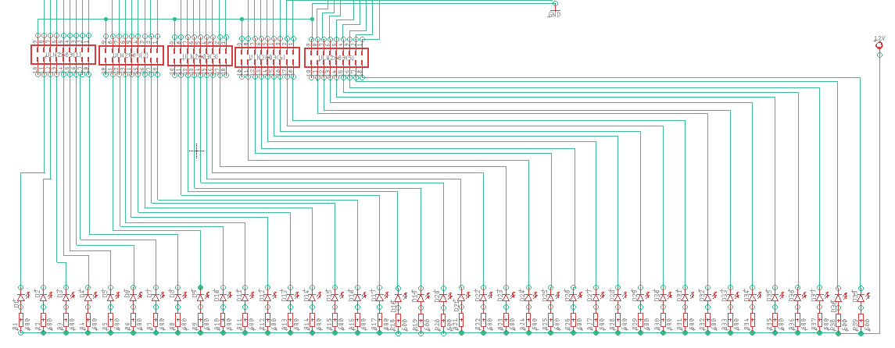
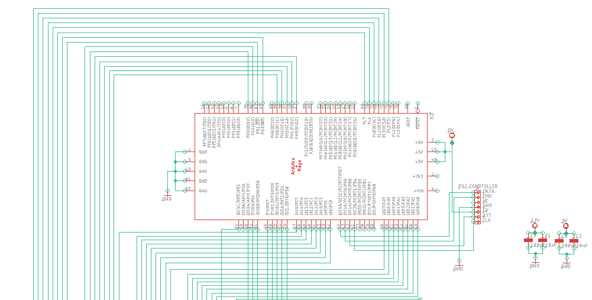

BlokSchema & Code


Je hebt een paneel met leds, daarmee zijn 3 drukknopen verbonden. Één voor rechtdoor te stappen, één voor naar links en één voor naar rechts. Bij het startvakje is de led opgelicht en moet je de juist weg zoeken door rechtdoor, links of rechts te stappen. Wanneer je een verkeerde stap doet dan moet je helemaal terug vanaf het begin starten en moest je de weg die je al had dus onthouden. Op het einde wordt er op het paneel een random cijfer getoond voor het codeslot dat nog volgt.